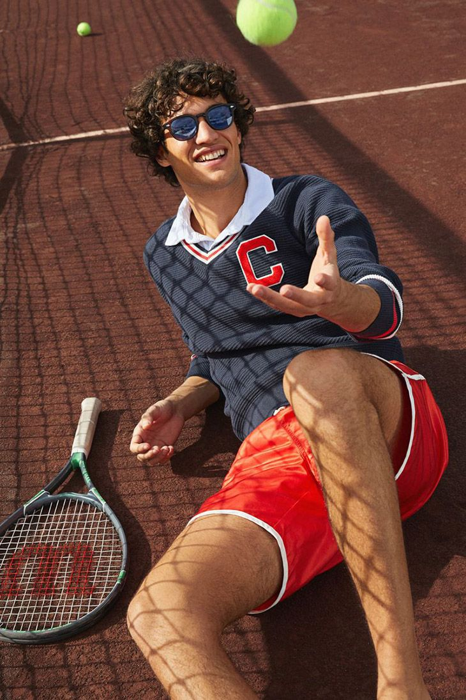

Tentang Kami
"Lomba Olahraga Nasional adalah ajang bergengsi yang mengajak masyarakat untuk berpartisipasi dalam berbagai cabang olahraga, meningkatkan kesehatan, dan mempererat persatuan bangsa."


Tentang Lomba Olahraga Sekolah
Tentang Kami
"Lomba Olahraga Nasional adalah ajang bergengsi yang mengajak masyarakat untuk berpartisipasi dalam berbagai cabang olahraga, meningkatkan kesehatan, dan mempererat persatuan bangsa."